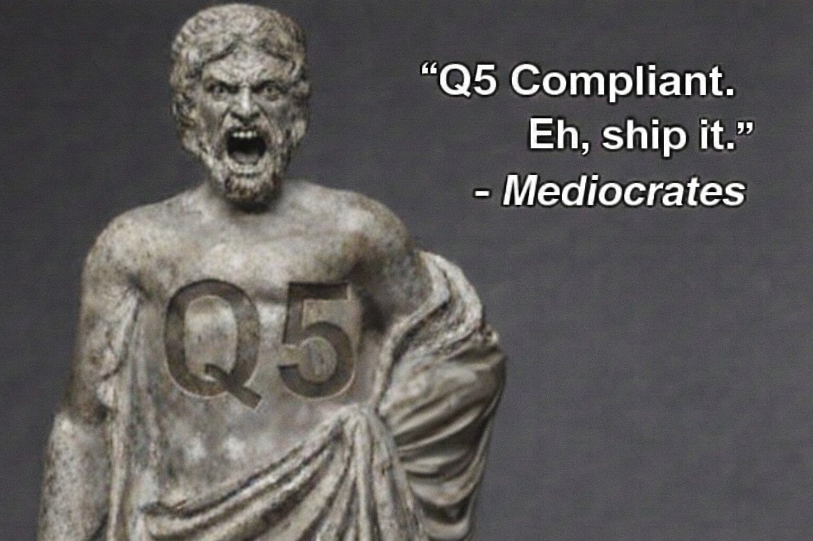

All referenced Gerch-Verse media was approved under conditions of limited compute, degraded output, and immediate regret.
Further refinement was considered and unanimously rejected.Where careers go to become acceptable
Seeking dedicated bovine deity for 24/7 milk production. Previous planetary nourishment experience preferred. Must supply infinite golden udder output with zero complaints.
Join our exclusive Insolencium® immersion cohort and help validate the comfort properties of our proprietary structural enhancement compound. Participants will enjoy extended proximity sessions in controlled environments while providing real-time feedback on subjective wellness metrics. Prior experience with glowing materials preferred but not required.
Catalog and cross-reference all sightings of Gerchan since her disappearance from Vine & Selma. Must reconcile conflicting witness accounts, redacted security footage, and Michael Moo's increasingly unhinged documentary notes. Position requires comfort with paradoxes and acceptance that some files catalog themselves.
Follow the Chief Approvals Philosopher-Officer and preemptively approve everything before he sees it. You are the quality he doesn't bother to check. Your signature becomes his signature. Your indifference becomes company policy.
This position existed yesterday. The job description wrote itself in your handwriting. You remember interviewing yourself. Do not apply. You already have.
Catalog every user click across the Gerch-Verse and assign appropriate tiered regret messages. Must maintain the 10-tier escalation system and trigger "Insolent Cow" final form at precisely 40% probability. Emotional damage assessment included in quarterly reviews.
Measure velocity, resonance, and motivational efficacy of CEO's patented hand-slap technique across celestial and terrestrial bovine populations. Must calibrate slaps for maximum yield without triggering existential dread (in cows or self).
Maintain and theoretically repair escape pods that only open if you can solve a riddle about quarterly earnings. Pod existence unverified. Payment in riddles.
Maintain perpetual readiness for 2-7 AM "incidents" involving property damage, public indecency, and/or accidental arson. Must navigate four jurisdictions simultaneously while explaining to judges why "indubitably" is not a valid legal defense. Pre-authorized company card for bail bonds, hush money, and dry cleaning.
Manage the complete care regimen for four VIP aerial mounts: Amit's pegasus (requires ego-stroking and cloud-grade oats), Leon's black pegasus (legal briefs for bedtime stories), Lizzie's phoenix (ash management and rebirth scheduling), and Big Tex's flying red rooster (brisket-scented wing polish). All animals fly. You do not. Deal with it.
Convert Leon's freestyle rap riddles into GAAP-compliant financial statements for quarters that haven't happened yet. Must reconcile "the milk that was slapped before the cow" with standard depreciation schedules. Excel proficiency useless. Beatbox comprehension mandatory.
Expose the algorithm behind Lizzie's "random" coffee machine that somehow always produces her preferred blend while ruining everyone else's morning. Michael Moo started this investigation. Michael Moo is missing. The coffee continues.
Verify that Big Tex's "alternative beef" products meet the legally vague threshold of "technically consumable." Duties include: identifying mystery proteins, maintaining the brisket-scented air freshener inventory, and occasionally tasting things that require NDAs. FDA correspondence handled by Leon (see: riddle-based legal defense).
"Help" rival operations "restructure" their assets into Gerchan Farms' portfolio. Travel required. Sunglasses mandatory even indoors. Must develop convincing explanations for why competitors voluntarily dissolved and/or relocated to the space gulag. Purple eye contacts provided.
Translate the cosmic despair emanating from Gadha's laser enclosure into quarterly morale reports. Must distinguish between "existential dread," "udder fatigue," and "Amit is approaching with that hand again." Previous goldfish ownership considered relevant experience.
Verify that our patented Insolencium® wall linings can withstand a full-force Gerchlander tantrum. Duties include: observing from safe distance, documenting structural integrity, and replacing yourself after each test. High turnover. Literally.
Catalog and DNA-test food remnants found at Moo's various "investigative locations." Determine which sauces contain state secrets. Maintain chain of custody for napkin-based evidence. Dry cleaning stipend included but somehow never sufficient.
Develop non-violent milk procurement methods for Light Amit's rejected "kindness first" program. Current prototypes include: motivational speaking to udders, group therapy for celestial cows, and consent-based lactation scheduling. Zero success rate. Infinite funding. Dark Amit laughs at your weekly reports.
Locate the unlocatable. Interview the un-interviewable. This position has been open since before the concept of "open." No applicants. No interviews. No existence.
Stamp legal documents using only the force of a milk-slap. Must provide own udder. Notarization valid in 47 dimensions and Texas.
Serve as direct operational interpreter for Amit’s high-velocity dairy expansion visions. Translate spontaneous hand-slap demonstrations into scalable agricultural systems. Coordinate with Raj Mehta on probability buffering, Sterling Winslow on inevitability framing, and Leon Cochran on preemptive legal riddles. Maintain composure when Dark Amit surfaces mid-meeting and Light Amit attempts to soften the language.
Partner with Lizzie Holmes to ensure all Gerch initiatives are declared inevitable through selective data illumination. You will craft “future-confirming” performance summaries aligning Q5 outputs with destiny-forward language. Coordinate with Eel On Muskmelon for market theatrics and Cole Mercer for liability insulation when predictions feel ambitious.
Work alongside Leon Cochran to craft layered, riddle-based legal responses to inquiries regarding infinite milk extraction, dimensional cows, and Q5 elasticity. Draft statements that answer questions by posing deeper ones. Liaise with Amit’s Mother when timelines appear disputed.
Manage strategic tension between Gerchan Farms and Big Tex Wang’s Red Rooster Ranch. Negotiate dairy-beef non-aggression frameworks while Dark Amit advocates absorption and Light Amit suggests partnership brunches. Monitor Michael Moo’s public statements for species solidarity drift.
Oversee ritual protocols surrounding Gadha, the celestial cow deity whose infinite milk output sustains core operations. Balance reverence with productivity. Coordinate with Sterling Winslow for refined theological memos and Raj Mehta for dimensional containment audits.
Assist Sterling Winslow in drafting polished inevitability briefs that transform volatile strategy into aristocratic certainty. Compose after-hours memos summarizing chaos as choreography. Attend executive dinners where predictions are spoken softly but carry irreversible weight.
Work directly under Eel On Muskmelon to orchestrate high-kinetic dairy sales initiatives that blend interpretive dance, piano ambiance, and aggressive quota acceleration. Translate artistic motion into quarterly volume spikes while maintaining alignment with Amit Gaur’s strategic tempo. Coordinate with Lizzie Holmes to ensure every sales surge feels diagnostic of destiny itself.
Assist Cole Mercer in redistributing legal, financial, and reputational heat generated by aggressive dairy scaling. Develop fallback narratives that transform systemic risk into misunderstood brilliance. Coordinate closely with Leon Cochran to ensure all reassignment pathways remain rhetorically fortified.
Monitor polarity fluctuations between Dark Amit’s profit-pure expansion drive and Light Amit’s benevolence-forward recalibrations. Draft integrated strategy briefs that allow conquest to appear compassionate and compassion to scale aggressively. Serve as emotional shock absorber during board volatility events.
Maintain narrative continuity across the officially unverifiable origins of Gerchan Farms. Document whispers attributed to Amit’s Mother and align them with Q5 performance outputs. Coordinate with Raj Mehta when past, present, and projected profit curves begin to overlap suspiciously.
Act as primary liaison between executive leadership and Michael Moo, spokesperson for Tier-1 dairy assets. Draft interspecies messaging that reinforces loyalty while discouraging philosophical awakenings. Coordinate with Gadha containment teams if herd morale approaches transcendence.
Investigate the abandoned Q6 initiative following documented testimony from Amit Jr — the half-robot future iteration of Amit Gaur — who arrived via unstable time conduit to warn against pushing beyond Q5 and thrown immediately into the space gulag for excessive insolence. Analyze projected models showing Q6 as a profits apocalypse scenario involving cascading liquidity implosions and sentient balance sheets. Maintain strict Q5 loyalty protocols.
Work alongside Michael Moo and executive leadership to monitor Gadha’s morale influence across Tier-2 pasture zones. Develop subtle engagement programs that redirect dissent into productivity surges aligned with Q5 targets. Coordinate with Cole Mercer if morale fluctuations begin trending toward organized awareness.
Amplify Light Amit’s presence during Q5 expansion announcements to ensure aggressive scaling appears spiritually aligned. Draft speeches that blend compassion, inevitability, and dairy supremacy. Partner with Leon Cochran to ensure tonal consistency across all press surfaces.
Translate Dark Amit’s uncompromising Q5 growth visions into executable departmental mandates. Stress-test operational ceilings and remove hesitation layers across senior leadership. Maintain absolute clarity that Q5 is sufficient—and that Q6 remains permanently theoretical.
Collaborate with Lizzie Holmes to construct forward-facing dairy diagnostics that predict consumer hydration before thirst awareness manifests. Ensure projections remain visually persuasive even when mathematically ambitious. Align outputs with Raj Mehta’s logistical frameworks to prevent reality lag.
Support Sterling Winslow in maintaining a high-performance executive ecosystem where urgency never fully dissipates. Fine-tune meeting cadences, accelerate decision cycles, and eliminate comfort zones that dilute Q5 edge. Ensure all leadership movement feels intentional and slightly faster than necessary.
You will be responsible for selling an objectively unreasonable number of Gerchmobiles per Q5 cycle while the neon pink-obsessed Eel On Muskmelon stands directly behind you, audibly and persistently breathing at a pace that suggests both inspiration and imminent combustion. Throughout all active sales windows, he will intermittently shout “Rururemon!” and “Xiexie Nihao!” in escalating barrages to maintain kinetic intensity. Your mandate is simple: convert confusion into contracts, panic into purchase orders, and rhythmic shouting into signed delivery agreements. All performance metrics are measured in velocity, not comfort.
Partner with Leon Cochran to defend Q5 positioning across volatile media cycles. Craft statements that transform scrutiny into admiration. Preemptively neutralize inquiries regarding hypothetical quarters beyond Q5.
Monitor the half-cyborg time-traveler Amit Jr. who warned Amit's mother about Q6 profits and was thrown into the space gulag for excessive insolence. Analyze his screaming predictions from solitary confinement. Maintain strict Q5 loyalty protocols. Time conduit maintenance required.
Manage Evil Amit's online presence across all platforms. Translate his relaxed kindness into brand-threatening content. His green Nehru jacket collection (seven shades existing only in Q5) requires daily documentation. Must handle "I told you so" tweets with grace.
Maintain the sacred site where young Amit Gaur was abandoned on a red acrylic sweater in a Burger King bathroom. Catalog Whopper wrappers that served as his first blankets. Preserve the fluorescent hum that became his lullaby. Mediocrates has declared this a historical landmark.
Reenact the pivotal moment when Amit's mother evaluated both young Amit and Evil Amit (brought by time-traveling Q6 Variant Amit Jr. with Gadha) and chose to keep Evil Amit because he "seemed manageable." Ghost regular Amit like a bad Tinder date. Take the sweater. Leave the child.
Service the half-robot future iteration of Amit Gaur who arrived via unstable time conduit. Maintain his screaming apparatus. Ensure his warnings about Q6 profits apocalypse continue broadcasting on loop throughout the space gulag. Oil changes every 47.3 hours.
Ensure Amit Jr.'s continuous screaming warnings about Q6 profits apocalypse are broadcast at appropriate volume throughout the gulag. Coordinate with Dark Amit on "excessive insolence" containment protocols. Maintain the time conduit collapse prevention systems.
Portray young Amit Gaur sitting on a red acrylic sweater on an Allentown Burger King bathroom floor, circa 1981. Maintain position for extended periods. Stare at door that will never open. Feel the fluorescent hum become your lullaby. Whopper wrapper blanket provided.
Catalog every instance where Evil Amit's relaxed kindness and Q4-sufficiency warnings prove correct. Document his green Nehru jacket collection (seven shades existing only in Q5). Maintain his "more interesting this way" knowledge about Gerchan's location.

HR DIRECTOR: ALL APPLICATIONS APPROVED